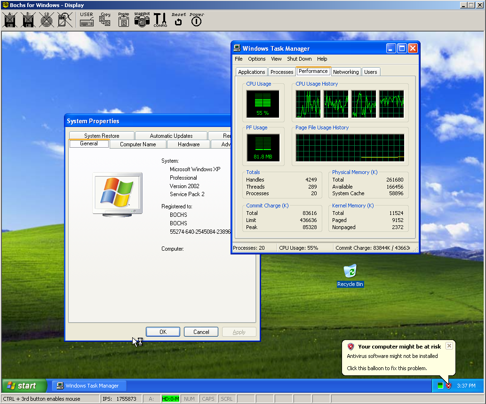

用 Bochs 从零跑起 Windows 98——手把手搭一个 x86 模拟器环境
Bochs 不是虚拟机，它逐条解释 x86 指令，精度到特权级和页表遍历。跟着这篇教程，你会在自己电脑上搭起 Bochs 环境，用 bximage 创建硬盘、写好 bochsrc、完整走完 Win98 安装流程。
跟着这篇教程，你会在自己电脑上从零搭起一个 Bochs 环境，跑通 Windows 98 的完整安装——从创建虚拟硬盘、写配置文件，到 BIOS 自检、引导、分区格式化、Setup 安装、首次进入桌面，每个环节都带你过一遍。
准备：你需要哪些东西
先说清楚 Bochs 和 VMware / VirtualBox 不是一类东西——它不做硬件虚拟化，而是把每一条 x86 指令解释执行一遍，精度到特权级切换、页表遍历、DMA 传输。想知道更多的话去它的bochs官网看。这种设计让它成了 OS 内核开发者的标配调试器，但也意味着速度不会太快，适合跑经典系统（DOS、Win9x、Linux 早期版本），别指望用它跑 Win10。
开工前准备这几样：
- Bochs 本体：从bochs下载拿官方发布包就行，里面带 bochs.exe（运行）、bochsdbg.exe（带调试器）、bximage.exe（磁盘镜像工具）三个核心工具
- BIOS 文件：Bochs 自带
BIOS-bochs-latest和VGABIOS-lgpl-latest-cirrus.bin，不用单独找 - Windows 98 SE 安装盘 ISO：可引导的那种
- 一个空目录：整个操作都在这个目录里完成，bochsrc、磁盘镜像、ISO 都放这，干净
第一步：用 bximage 创建虚拟硬盘
Bochs 的磁盘镜像是 raw 格式（flat），最简单的方式是用自带的 bximage 工具生成。打开命令行，cd 到你的工作目录：
bximage -q -create -mode flat -size 500M -filename win98.img这条命令会输出几行信息，其中最重要的是 C/H/S 三个数字（柱面数、磁头数、每磁道扇区数），类似这样：
C/H/S = 1040/16/63把这三个数字抄下来——后面写 bochsrc 时要原封不动填进去，差一个 Fdisk 就会报磁盘容量不对。500MB 对 Win98 绰绰有余，当年标配才 2GB。
第二步：写 bochsrc 配置文件
bochsrc 是 Bochs 的核心——它告诉模拟器要模拟什么硬件、从哪引导、日志怎么打。在工作目录下创建一个叫 bochsrc 的纯文本文件，写入以下内容：
romimage: file=BIOS-bochs-latest, address=0xfffc0000
vgaromimage: file=VGABIOS-lgpl-latest-cirrus.bin
cpu: model=pentium, count=1, ips=15000000
memory: guest=64, host=64
ata0-master: type=disk, path="win98.img", mode=flat, cylinders=1040, heads=16, spt=63
ata1-master: type=cdrom, path="win98se.iso", status=inserted
boot: cdrom, disk
mouse: enabled=1
display_library: wx
log: bochsout.txt
panic: action=ask
error: action=report
warn: action=ignore
info: action=ignore
debug: action=ignore注意几点：
cylinders=1040, heads=16, spt=63这里换成你刚才 bximage 输出的数字path="win98.img"和path="win98se.iso"分别改成你实际的文件名- VGA 选 Cirrus —— 这是 Win95/98 自带驱动能识别的唯一显卡型号，换别的启动就黑屏
- CPU model 用 pentium 或 pentium2，太高反而可能有兼容性问题
- 日志级别只留 error 和 panic，其他全 ignore，避免刷屏看不到关键错误
- bochsrc 每个参数的完整说明和更多硬件配置选项可以翻bochs文档查
第三步：启动 Bochs，装 Win98
双击 bochs.exe（或者 bochsdbg.exe），Bochs 会弹出一个 wx 窗口，先过 BIOS 自检——屏幕上应该能看到 Bochs BIOS 的硬件检测信息，包括 CPU、内存、Cirrus VGA、硬盘、光驱。这一步如果报错，八成是 bochsrc 里路径写错了。
BIOS 自检完，因为我们设置了 boot: cdrom，它会尝试从光驱引导。Win98 SE 的 ISO 是可引导的，会显示经典的蓝色 Windows 98 Setup 启动界面。
接下来就是和真实 PC 一模一样的安装流程：
- 引导盘菜单：选"Boot from CD-ROM" → 再选"Start Windows 98 Setup from CD-ROM"
- Fdisk 分区：Setup 会先跑 Fdisk，给 500MB 的硬盘分一个主 DOS 分区（默认选项就行），分完重启
- Format 格式化：重启后 Setup 自动检测到新分区，问你要不要 Format，选 Yes，等它跑完
- Setup 向导：这是图形界面了，选安装目录（默认 C:\Windows）、填产品密钥、等它复制文件、检测硬件——这里它应该能检测到 Cirrus 显卡、PS/2 鼠标、可能还有 NE2000 网卡（如果 bochsrc 里开了的话）
- 第一次重启：Setup 完会提示重启。这时候关掉 Bochs，打开 bochsrc，把
boot: cdrom, disk改成boot: disk（拔掉光驱），再启动——就进入 Win98 桌面了
整个安装过程大概 20~30 分钟，取决于你的宿主 CPU 速度。Bochs 是解释执行，ips=15000000 大概相当于 Pentium III 1.5GHz 的指令吞吐量，但实际速度会慢一些。新一点的 i7 / i9 CPU 上，Win98 启动应该在 30 秒以内，打开窗口不卡顿。

常见卡点
Fdisk 报告的磁盘容量不对
bximage 创建时输出的 C/H/S 必须完整抄到 bochsrc 的 ata0-master 那一行。如果 Fdisk 显示的容量和你创建时设的 500MB 差得离谱，就是 CHS 参数写错了。删掉 win98.img 重新来一遍，这次仔细看 bximage 的输出。
安装完重启后黑屏
最常见的原因是 boot 顺序没改——你已经装完系统了，还让它先试光驱引导，而光驱里还是安装盘，它会再次进入 Setup 或者什么都不显示。改成 boot: disk 就好。
如果 boot 顺序没错还是黑屏，检查 VGA BIOS 和 VGA 型号是否匹配——bochsrc 里 vgaromimage 必须用 Cirrus 的 bin 文件，不能用别的 VGA BIOS。
鼠标不能用
bochsrc 里必须有 mouse: enabled=1。而且 Win98 安装过程中需要检测到 PS/2 鼠标（Bochs 默认模拟的就是这个）。如果 bochsrc 里加了 usb 鼠标或者其他设备导致资源冲突，也可能让 PS/2 鼠标不工作。
往下还能玩什么
Win98 跑起来之后，可以试试打开 bochsrc 里注释掉的 SB16 声卡和 NE2000 网卡——装完驱动就能在 Bochs 里玩 Doom、StarCraft 这些经典 DOS 游戏（不过声音能不能直接出来取决于编译时有没有开 SDL，更省事的方案是改用 DOSBox）。OS 开发者则可以切到 bochsdbg.exe，对任意指令下断点、观察特权级切换、调试自己写的内核。
这套环境在你自己电脑上搭建一遍之后，以后想研究 x86 架构、想跑老软件、想写 OS 内核，都有一个精确可控的实验台。bochsrc 模板和我整理的一些进阶调试笔记同步到了三个代码仓库——主仓库在GitHub，国内镜像放在Gitee和GitCode，访问不上 GitHub 直接走镜像就行。